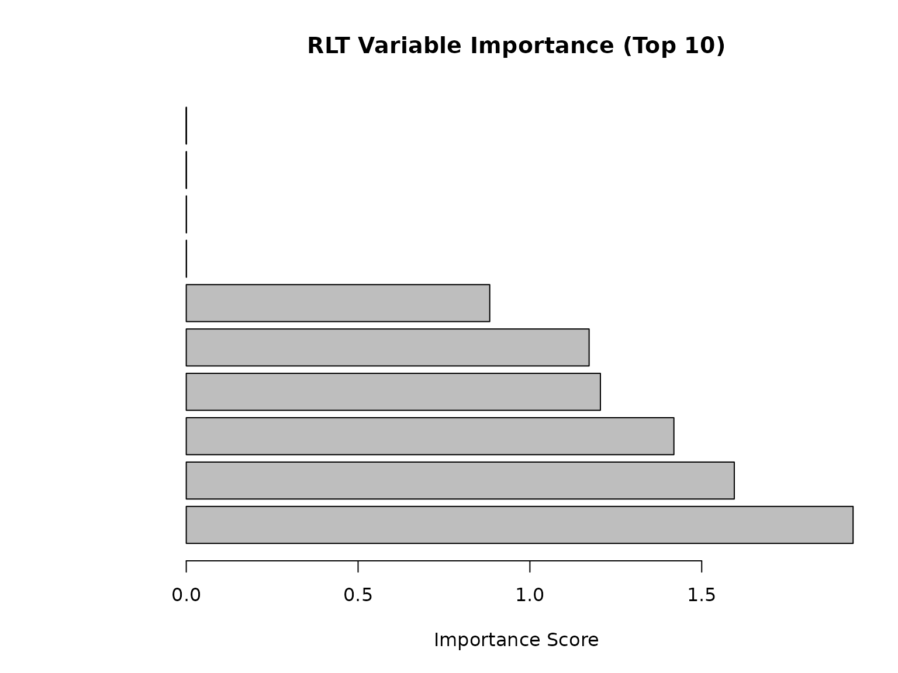

RLT Package Reinforcement Learning Test
Ruoqing Zhu
Last Updated: July 17, 2025
Test-RLT.RmdInstall the RLT Package
For Windows Users
In Windows, RLT can be installed using install_github.
The compilation of this package requires GCC. Hence, you may also need
to install Rtools from here.
For macOS Users
When installing RLT on macOS, the process can be slightly trickier. It mainly consists of two steps:
Step 1: Install Compilers
- Follow this guide to install the GNU Fortran compiler: gfortran-12.2-universal.pkg
- If you do not already have Xcode (most systems come with Xcode installed already), you can use this line to install it:
Step 2: Set Makevars to Point to the Compiler
Create the Makevars file using:
Check your folder of gfortran. The compiler will be installed to
/opt/gfortran folder as default.
Add these lines to point to the correct folder of the compiler. You
may use open -a TextEdit ~/.R/Makevars to open a text
editor and type in these lines:
FC = /opt/gfortran/bin/gfortran
F77 = /opt/gfortran/bin/gfortran
FLIBS = -L/opt/gfortran/libAfter completing these steps, you should be able to directly install
the RLT package using install_github("teazrq/RLT") in
RStudio the same way as Windows machine. The compilation may require a
few minutes.
OpenMP in macOS
The previous steps would not activate OpenMP parallel computing. To enable OpenMP while compiling the RLT package, follow these steps:
Step 1: Download and Install LLVM
For example, to install the 14.0.6 version (check the ones that compatible with your Xcode version), use:
curl -O https://mac.r-project.org/openmp/openmp-14.0.6-darwin20-Release.tar.gz
sudo tar fvxz openmp-14.0.6-darwin20-Release.tar.gz -C /You should then see the following message:
usr/local/lib/libomp.dylib
usr/local/include/ompt.h
usr/local/include/omp.h
usr/local/include/omp-tools.hStep 2: Add Flags into Makevars
The procedure is the same as we explained previously. You should add these two lines into your Makevars file:
CPPFLAGS += -Xclang -fopenmp
LDFLAGS += -lompAfter these two steps, you can then use
install_github("teazrq/RLT", force = TRUE) to re-install
the RLT package.
Benchmarking
The following code tests the performance of the RLT package in a regression problem:
library(parallel)
# Set seed for reproducibility
set.seed(1)
# Define data size
trainn <- 800
testn <- 1000
n <- trainn + testn
p <- 30
# Generate continuous variables (X1) and categorical variables (X2)
X1 <- matrix(rnorm(n * p / 2), n, p / 2)
X2 <- matrix(as.integer(runif(n * p / 2) * 3), n, p / 2)
# Combine continuous and categorical variables into a data frame (X)
X <- data.frame(X1, X2)
# Convert the second half of the columns in X to factors
X[, (p / 2 + 1):p] <- lapply(X[, (p / 2 + 1):p], as.factor)
# Generate outcomes (y)
y <- 1 + rowSums(X[, 2:6]) + 2 * (X[, p / 2 + 1] %in% c(1, 3)) + rnorm(n)
# Set tuning parameters
ntrees <- 1000
ncores <- detectCores() - 1
# Benchmark RLT
start_time <- Sys.time()
RLTfit <- RLT(X[1:trainn, ], y[1:trainn], model = "regression",
ntrees = ntrees, ncores = ncores, nmin = 10,
split.gen = "random", nsplit = 1,
resample.prob = 0.85, resample.replace = FALSE,
reinforcement = TRUE, importance = TRUE,
param.control = list("embed.ntrees" = 50,
"embed.mtry" = 1/2,
"embed.nmin" = 10,
"embed.split.gen" = "random",
"embed.nsplit" = 1,
"embed.resample.replace" = TRUE,
"embed.resample.prob" = 0.9,
"embed.mute" = 0.5,
"embed.protect" = 5),
verbose = TRUE)
## Regression Random Forest ...
## ---------- Parameters Summary ----------
## (N, P) = (800, 30)
## # of trees = 1000
## (mtry, nmin) = (10, 10)
## split generate = Random, 1
## sampling = 0.85 w/o replace
## (Obs, Var) weights = (No, No)
## importance = permute
## reinforcement = Yes
## ----------------------------------------
## embed.ntrees = 50
## embed.mtry = 50%
## embed.nmin = 10
## embed.split.gen = Random, 1
## embed.resample.replace = TRUE
## embed.resample.prob = 0.9
## embed.mute = 0.5
## embed.protect = 5
## embed.threshold = 0.25
## ----------------------------------------
RLT_time <- difftime(Sys.time(), start_time, units = "secs")
# Make predictions
RLT_pred <- predict(RLTfit, X[(trainn + 1):n, ])
RLT_error <- mean((RLT_pred$Prediction - y[(trainn + 1):n])^2)
cat("RLT Results:\n")
## RLT Results:
cat("Training time:", round(as.numeric(RLT_time), 2), "seconds\n")
## Training time: 141.87 seconds
cat("Test MSE:", round(RLT_error, 4), "\n")
## Test MSE: 2.0946
cat("Variable importance (top 5):\n")
## Variable importance (top 5):
print(head(sort(RLTfit$VarImp, decreasing = TRUE), 5))
## [1] 1.940552 1.594786 1.419061 1.205183 1.172316
# Plot variable importance
par(mar = c(5, 8, 4, 2))
barplot(sort(RLTfit$VarImp, decreasing = TRUE)[1:10],
horiz = TRUE, las = 1,
main = "RLT Variable Importance (Top 10)",
xlab = "Importance Score")
Single Variable Embedded Splitting
# set.seed(2)
n = 1000
p = 10
X = matrix(rnorm(n*p), n, p)
y = 1 + X[, 1] + X[, 3] + X[, 9] + rnorm(n)
testX = matrix(rnorm(n*p), n, p)
testy = 1 + testX[, 1] + testX[, 3] + testX[, 9] + rnorm(n)
start_time <- Sys.time()
RLTfit <- RLT(X, y, model = "regression",
ntrees = 100, ncores = 1, nmin = 10,
split.gen = "random", nsplit = 1,
resample.prob = 0.85, resample.replace = FALSE,
reinforcement = TRUE, importance = "distribute",
param.control = list("embed.ntrees" = 50,
"embed.mtry" = 1/2,
"embed.nmin" = 10,
"embed.split.gen" = "random",
"embed.nsplit" = 1,
"embed.resample.replace" = TRUE,
"embed.resample.prob" = 0.9,
"embed.mute" = 0.5,
"embed.protect" = 5),
verbose = TRUE)
## Regression Random Forest ...
## ---------- Parameters Summary ----------
## (N, P) = (1000, 10)
## # of trees = 100
## (mtry, nmin) = (3, 10)
## split generate = Random, 1
## sampling = 0.85 w/o replace
## (Obs, Var) weights = (No, No)
## importance = distribute
## reinforcement = Yes
## ----------------------------------------
## embed.ntrees = 50
## embed.mtry = 50%
## embed.nmin = 10
## embed.split.gen = Random, 1
## embed.resample.replace = TRUE
## embed.resample.prob = 0.9
## embed.mute = 0.5
## embed.protect = 5
## embed.threshold = 0.25
## ----------------------------------------
difftime(Sys.time(), start_time, units = "secs")
## Time difference of 22.83125 secs
# oob error
mean((RLTfit$Prediction - y)^2, na.rm = TRUE)
## [1] 1.135828
# prediction error
pred = predict(RLTfit, testX)
mean((pred$Prediction - testy)^2)
## [1] 1.127407
# check one tree
get.one.tree(RLTfit, 1)
## Tree #1 in the fitted regression forest:
## SplitVar SplitValue LeftNode RightNode NodeWeight NodeAve
## 1 V 1 -0.271622734 2 3 850 0.00000000
## 2 V 3 1.374945871 4 5 336 0.00000000
## 3 V 9 -0.727417719 90 91 514 0.00000000
## 4 V 3 1.234704337 6 7 309 0.00000000
## 5 V 9 -0.948021158 88 89 27 0.00000000
## 6 V 9 -1.693387017 8 9 302 0.00000000
## 7 <NA> NA NA NA 7 0.71192780
## 8 V 3 -0.883435226 10 11 14 0.00000000
## 9 V 3 -0.089922191 12 13 288 0.00000000
## 10 <NA> NA NA NA 3 -4.26542670
## 11 <NA> NA NA NA 11 -1.57313849
## 12 V 9 0.912644306 14 15 152 0.00000000
## 13 V 9 1.249173258 54 55 136 0.00000000
## 14 V 9 -0.097220388 16 17 125 0.00000000
## 15 V 1 -0.510435508 46 47 27 0.00000000
## 16 V 3 -0.754646362 18 19 64 0.00000000
## 17 V 1 -1.872329678 36 37 61 0.00000000
## 18 V 3 -2.541912118 20 21 38 0.00000000
## 19 V 1 -0.409637646 32 33 26 0.00000000
## 20 <NA> NA NA NA 2 -3.47944364
## 21 V 3 -1.127445885 22 23 36 0.00000000
## 22 V 3 -2.151212576 24 25 21 0.00000000
## 23 V 9 -1.021296406 30 31 15 0.00000000
## 24 <NA> NA NA NA 3 -3.27609845
## 25 V 3 -1.200141685 26 27 18 0.00000000
## 26 V 9 -1.125341544 28 29 15 0.00000000
## 27 <NA> NA NA NA 3 -1.19882299
## 28 <NA> NA NA NA 3 -3.12106506
## 29 <NA> NA NA NA 12 -2.35400875
## 30 <NA> NA NA NA 6 -2.97086231
## 31 <NA> NA NA NA 9 -0.73618046
## 32 V 1 -1.080571631 34 35 23 0.00000000
## 33 <NA> NA NA NA 3 -1.48260215
## 34 <NA> NA NA NA 11 -1.91594192
## 35 <NA> NA NA NA 12 -0.72815582
## 36 <NA> NA NA NA 4 -2.72532811
## 37 V 1 -0.605717476 38 39 57 0.00000000
## 38 V 1 -1.529468330 40 41 42 0.00000000
## 39 V 1 -0.432920316 44 45 15 0.00000000
## 40 <NA> NA NA NA 8 -1.02858638
## 41 V 3 -1.426741255 42 43 34 0.00000000
## 42 <NA> NA NA NA 7 -1.03788729
## 43 <NA> NA NA NA 27 -0.23195290
## 44 <NA> NA NA NA 11 -0.05656630
## 45 <NA> NA NA NA 4 1.35331932
## 46 V 1 -0.538605815 48 49 21 0.00000000
## 47 <NA> NA NA NA 6 1.77815785
## 48 V 1 -0.558162770 50 51 20 0.00000000
## 49 <NA> NA NA NA 1 -0.44745212
## 50 V 1 -0.680710723 52 53 18 0.00000000
## 51 <NA> NA NA NA 2 0.68823768
## 52 <NA> NA NA NA 12 -0.04243928
## 53 <NA> NA NA NA 6 0.47270611
## 54 V 9 0.799874127 56 57 115 0.00000000
## 55 V 1 -1.046523344 86 87 21 0.00000000
## 56 V 9 -0.375221396 58 59 100 0.00000000
## 57 V 3 0.253907444 84 85 15 0.00000000
## 58 V 1 -0.705645768 60 61 42 0.00000000
## 59 V 1 -1.020032372 68 69 58 0.00000000
## 60 V 1 -1.731467755 62 63 21 0.00000000
## 61 V 3 0.761169870 66 67 21 0.00000000
## 62 <NA> NA NA NA 3 -1.25252916
## 63 V 1 -0.873759411 64 65 18 0.00000000
## 64 <NA> NA NA NA 12 -0.66336370
## 65 <NA> NA NA NA 6 -0.07782485
## 66 <NA> NA NA NA 17 0.03622966
## 67 <NA> NA NA NA 4 0.97543688
## 68 V 1 -1.741806080 70 71 25 0.00000000
## 69 V 1 -1.005773900 74 75 33 0.00000000
## 70 <NA> NA NA NA 8 -0.66962756
## 71 V 9 0.187767144 72 73 17 0.00000000
## 72 <NA> NA NA NA 9 0.14252798
## 73 <NA> NA NA NA 8 1.16742055
## 74 <NA> NA NA NA 1 -1.66153363
## 75 V 1 -0.729474746 76 77 32 0.00000000
## 76 V 9 0.044841245 78 79 13 0.00000000
## 77 V 3 0.095847049 80 81 19 0.00000000
## 78 <NA> NA NA NA 9 0.95727738
## 79 <NA> NA NA NA 4 1.15035663
## 80 <NA> NA NA NA 5 0.75039618
## 81 V 3 0.945358635 82 83 14 0.00000000
## 82 <NA> NA NA NA 11 1.33935375
## 83 <NA> NA NA NA 3 3.01374415
## 84 <NA> NA NA NA 7 0.79048424
## 85 <NA> NA NA NA 8 2.26542007
## 86 <NA> NA NA NA 12 1.46900280
## 87 <NA> NA NA NA 9 2.09600159
## 88 <NA> NA NA NA 7 0.12661862
## 89 <NA> NA NA NA 20 2.78737361
## 90 V 3 1.267165218 92 93 126 0.00000000
## 91 V 3 -0.330760953 124 125 388 0.00000000
## 92 V 1 0.405914400 94 95 119 0.00000000
## 93 <NA> NA NA NA 7 2.38802331
## 94 V 3 0.747528070 96 97 54 0.00000000
## 95 V 3 -0.359616043 108 109 65 0.00000000
## 96 V 3 0.027194774 98 99 48 0.00000000
## 97 <NA> NA NA NA 6 0.72838854
## 98 V 9 -1.107816947 100 101 38 0.00000000
## 99 <NA> NA NA NA 10 -0.27799643
## 100 V 9 -2.447337622 102 103 24 0.00000000
## 101 V 3 -1.328138262 106 107 14 0.00000000
## 102 <NA> NA NA NA 2 -2.37760595
## 103 V 3 -1.376264711 104 105 22 0.00000000
## 104 <NA> NA NA NA 4 -1.53795574
## 105 <NA> NA NA NA 18 -0.78354380
## 106 <NA> NA NA NA 2 -1.56711502
## 107 <NA> NA NA NA 12 -0.40202238
## 108 V 9 -1.901469017 110 111 25 0.00000000
## 109 V 1 1.013605229 114 115 40 0.00000000
## 110 <NA> NA NA NA 5 -1.59273315
## 111 V 3 -0.570041103 112 113 20 0.00000000
## 112 <NA> NA NA NA 14 -0.29737049
## 113 <NA> NA NA NA 6 1.16632057
## 114 V 9 -2.306502866 116 117 16 0.00000000
## 115 V 9 -0.995887076 120 121 24 0.00000000
## 116 <NA> NA NA NA 1 -0.35776804
## 117 V 9 -1.139062166 118 119 15 0.00000000
## 118 <NA> NA NA NA 7 0.44933019
## 119 <NA> NA NA NA 8 1.09751244
## 120 V 3 0.141065954 122 123 16 0.00000000
## 121 <NA> NA NA NA 8 2.86883252
## 122 <NA> NA NA NA 9 0.65278175
## 123 <NA> NA NA NA 7 1.69992724
## 124 V 9 -0.691983530 126 127 132 0.00000000
## 125 V 9 -0.610407411 164 165 256 0.00000000
## 126 <NA> NA NA NA 1 -1.77870752
## 127 V 9 1.622401036 128 129 131 0.00000000
## 128 V 1 0.316377929 130 131 121 0.00000000
## 129 <NA> NA NA NA 10 3.20109493
## 130 V 3 -0.426647066 132 133 45 0.00000000
## 131 V 9 -0.009049132 144 145 76 0.00000000
## 132 V 3 -0.944307385 134 135 43 0.00000000
## 133 <NA> NA NA NA 2 1.58596402
## 134 V 3 -1.120979231 136 137 21 0.00000000
## 135 V 9 -0.185182700 140 141 22 0.00000000
## 136 V 3 -1.449634214 138 139 16 0.00000000
## 137 <NA> NA NA NA 5 0.52970559
## 138 <NA> NA NA NA 8 -1.76438808
## 139 <NA> NA NA NA 8 -0.11908409
## 140 <NA> NA NA NA 6 0.01946929
## 141 V 9 0.648977291 142 143 16 0.00000000
## 142 <NA> NA NA NA 9 0.47790599
## 143 <NA> NA NA NA 7 1.52264332
## 144 V 3 -1.470568801 146 147 29 0.00000000
## 145 V 1 0.707096946 152 153 47 0.00000000
## 146 <NA> NA NA NA 9 -0.55405067
## 147 V 1 0.564986642 148 149 20 0.00000000
## 148 <NA> NA NA NA 6 0.14311401
## 149 V 9 -0.268171284 150 151 14 0.00000000
## 150 <NA> NA NA NA 11 1.38670442
## 151 <NA> NA NA NA 3 -0.01070608
## 152 V 9 0.532634901 154 155 15 0.00000000
## 153 V 1 0.926551310 156 157 32 0.00000000
## 154 <NA> NA NA NA 8 0.90469300
## 155 <NA> NA NA NA 7 1.93628824
## 156 <NA> NA NA NA 7 1.07095999
## 157 V 1 1.173078632 158 159 25 0.00000000
## 158 <NA> NA NA NA 7 1.29151153
## 159 V 1 1.487007326 160 161 18 0.00000000
## 160 <NA> NA NA NA 5 2.36713456
## 161 V 1 2.158366473 162 163 13 0.00000000
## 162 <NA> NA NA NA 12 2.58789063
## 163 <NA> NA NA NA 1 3.33842500
## 164 <NA> NA NA NA 12 1.25050247
## 165 V 9 -0.435209955 166 167 244 0.00000000
## 166 V 1 0.559515085 168 169 21 0.00000000
## 167 V 1 -0.255512201 170 171 223 0.00000000
## 168 <NA> NA NA NA 9 0.38547909
## 169 <NA> NA NA NA 12 2.45272840
## 170 <NA> NA NA NA 3 2.13500092
## 171 V 3 -0.180156580 172 173 220 0.00000000
## 172 V 9 0.697650062 174 175 20 0.00000000
## 173 V 1 0.113212358 176 177 200 0.00000000
## 174 <NA> NA NA NA 16 1.69905716
## 175 <NA> NA NA NA 4 3.43957073
## 176 V 9 0.326819991 178 179 49 0.00000000
## 177 V 3 0.760558440 192 193 151 0.00000000
## 178 V 3 0.523460727 180 181 22 0.00000000
## 179 V 3 0.054738808 184 185 27 0.00000000
## 180 <NA> NA NA NA 5 1.46637156
## 181 V 1 -0.042233537 182 183 17 0.00000000
## 182 <NA> NA NA NA 7 2.45547937
## 183 <NA> NA NA NA 10 1.90938888
## 184 <NA> NA NA NA 3 2.81635615
## 185 V 3 0.428669325 186 187 24 0.00000000
## 186 <NA> NA NA NA 7 2.27998056
## 187 V 3 1.143515760 188 189 17 0.00000000
## 188 V 9 0.511508204 190 191 14 0.00000000
## 189 <NA> NA NA NA 3 4.10278294
## 190 <NA> NA NA NA 2 1.68255475
## 191 <NA> NA NA NA 12 2.87219379
## 192 V 9 -0.007922848 194 195 97 0.00000000
## 193 V 9 -0.135311880 220 221 54 0.00000000
## 194 V 1 0.682559821 196 197 19 0.00000000
## 195 V 1 0.488762966 198 199 78 0.00000000
## 196 <NA> NA NA NA 7 1.24641637
## 197 <NA> NA NA NA 12 2.70591957
## 198 V 3 0.681793763 200 201 27 0.00000000
## 199 V 9 0.138165461 208 209 51 0.00000000
## 200 V 3 -0.042053145 202 203 26 0.00000000
## 201 <NA> NA NA NA 1 4.29893352
## 202 <NA> NA NA NA 4 2.73221045
## 203 V 3 0.137527511 204 205 22 0.00000000
## 204 <NA> NA NA NA 6 1.84536639
## 205 V 3 0.464864082 206 207 16 0.00000000
## 206 <NA> NA NA NA 11 2.41765627
## 207 <NA> NA NA NA 5 3.13310186
## 208 <NA> NA NA NA 9 2.58187150
## 209 V 1 1.270314868 210 211 42 0.00000000
## 210 V 9 1.164587398 212 213 31 0.00000000
## 211 <NA> NA NA NA 11 4.21605610
## 212 V 3 -0.131521293 214 215 25 0.00000000
## 213 <NA> NA NA NA 6 3.90452572
## 214 <NA> NA NA NA 1 1.86358877
## 215 V 3 0.756225023 216 217 24 0.00000000
## 216 V 3 0.275884173 218 219 23 0.00000000
## 217 <NA> NA NA NA 1 3.38284974
## 218 <NA> NA NA NA 12 2.76257479
## 219 <NA> NA NA NA 11 3.09088634
## 220 V 9 -0.166624080 222 223 13 0.00000000
## 221 V 3 1.327673831 224 225 41 0.00000000
## 222 <NA> NA NA NA 9 3.33907208
## 223 <NA> NA NA NA 4 3.67201726
## 224 V 9 0.016279962 226 227 23 0.00000000
## 225 V 9 0.770508072 230 231 18 0.00000000
## 226 <NA> NA NA NA 4 3.37756123
## 227 V 9 0.544482457 228 229 19 0.00000000
## 228 <NA> NA NA NA 8 2.81274534
## 229 <NA> NA NA NA 11 4.16942669
## 230 <NA> NA NA NA 9 4.34731857
## 231 <NA> NA NA NA 9 4.99769295Check seed match
RLTfit2 <- RLT(X, y, model = "regression",
ntrees = 20, ncores = 1, nmin = 10,
split.gen = "random", nsplit = 1,
resample.prob = 0.85, resample.replace = FALSE,
reinforcement = TRUE, importance = TRUE,
param.control = list("embed.ntrees" = 50,
"embed.mtry" = 1/3,
"embed.nmin" = 10,
"embed.split.gen" = "random",
"embed.nsplit" = 1,
"embed.resample.prob" = 0.75,
"embed.mute" = 0.5,
"embed.protect" = 5),
verbose = TRUE, seed = RLTfit$parameters$seed)
## Regression Random Forest ...
## ---------- Parameters Summary ----------
## (N, P) = (1000, 10)
## # of trees = 20
## (mtry, nmin) = (3, 10)
## split generate = Random, 1
## sampling = 0.85 w/o replace
## (Obs, Var) weights = (No, No)
## importance = permute
## reinforcement = Yes
## ----------------------------------------
## embed.ntrees = 50
## embed.mtry = 33.3%
## embed.nmin = 10
## embed.split.gen = Random, 1
## embed.resample.replace = TRUE
## embed.resample.prob = 0.75
## embed.mute = 0.5
## embed.protect = 5
## embed.threshold = 0.25
## ----------------------------------------
all(RLTfit$VarImp == RLTfit2$VarImp)
## [1] FALSELinear Combination Split
This is a model without fitting embedded random forest to search for the linear combinations. The variables are ranked by marginal screening.
# set.seed(1)
library(MASS)
n = 1000
p = 5
S = matrix(0.3, p, p)
diag(S) = 1
S[1, 5] = S[5, 1] = 0.9
S[1, 3] = S[3, 1] = S[5, 3] = S[3, 5] = -0.3
X1 = mvrnorm(n, mu = rep(0, p), Sigma = S)
X2 = as.factor(sample(c(-1,1), size = n, replace = TRUE))
X = data.frame(X1, X2)
y = 1 + 2*(X[, 6] == 1) + X[, 1] + X[, 3] + rnorm(n)
w = runif(n)
start_time <- Sys.time()
RLTfit <- RLT(X, y, model = "regression", obs.w = w,
ntrees = 100, ncores = 1, nmin = 50, mtry = 3,
split.gen = "random", nsplit = 3,
resample.prob = 0.8, resample.replace = FALSE,
split.rule = "sir",
param.control = list("linear.comb" = 3), #ZRL
importance = TRUE,
verbose = TRUE)
## Regression Forest with Linear Combination Splits ...
## ---------- Parameters Summary ----------
## (N, P) = (1000, 6)
## # of trees = 100
## (mtry, nmin) = (3, 50)
## split generate = Random, 3
## sampling = 0.8 w/o replace
## (Obs, Var) weights = (Yes, No)
## linear combination = 3
## split rule = sir
## importance = permute
## reinforcement = No
## ----------------------------------------
difftime(Sys.time(), start_time, units = "secs")
## Time difference of 45.19931 secs
plot(RLTfit$Prediction, y)
mean( (RLTfit$Prediction - y)^2 , na.rm = TRUE)
## [1] 1.132771